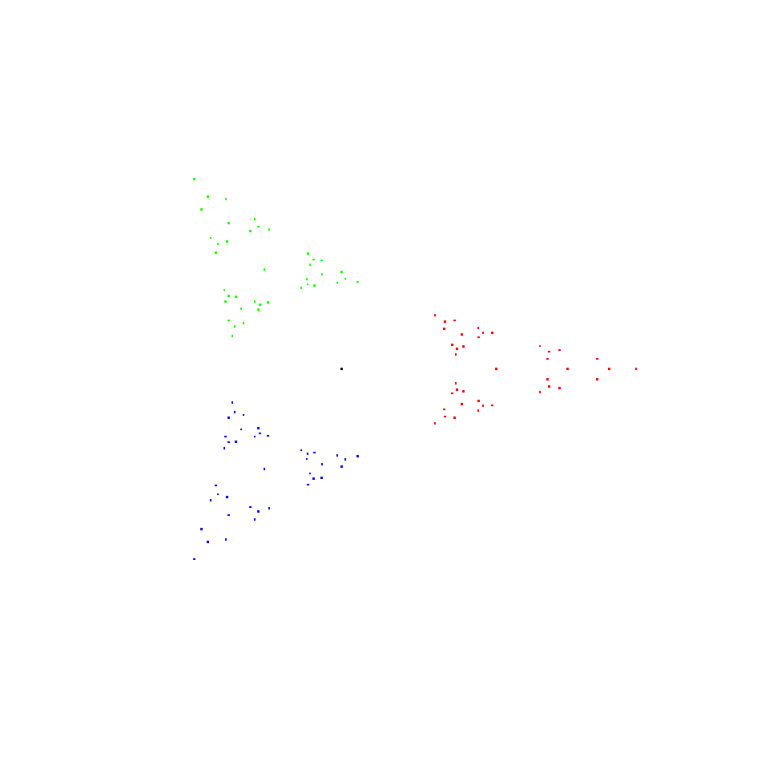
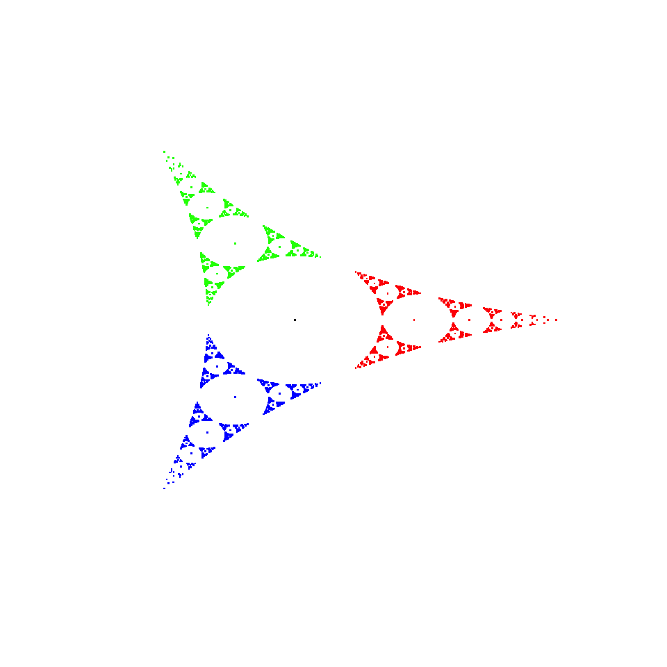
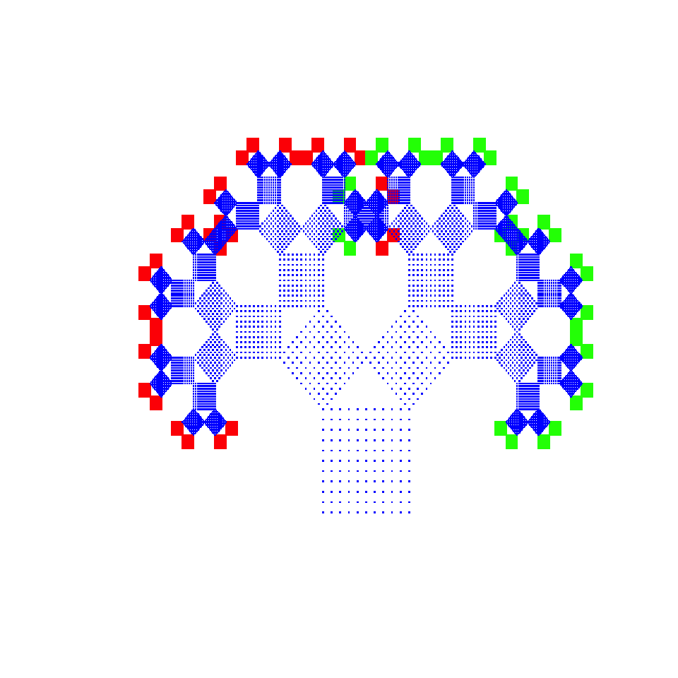
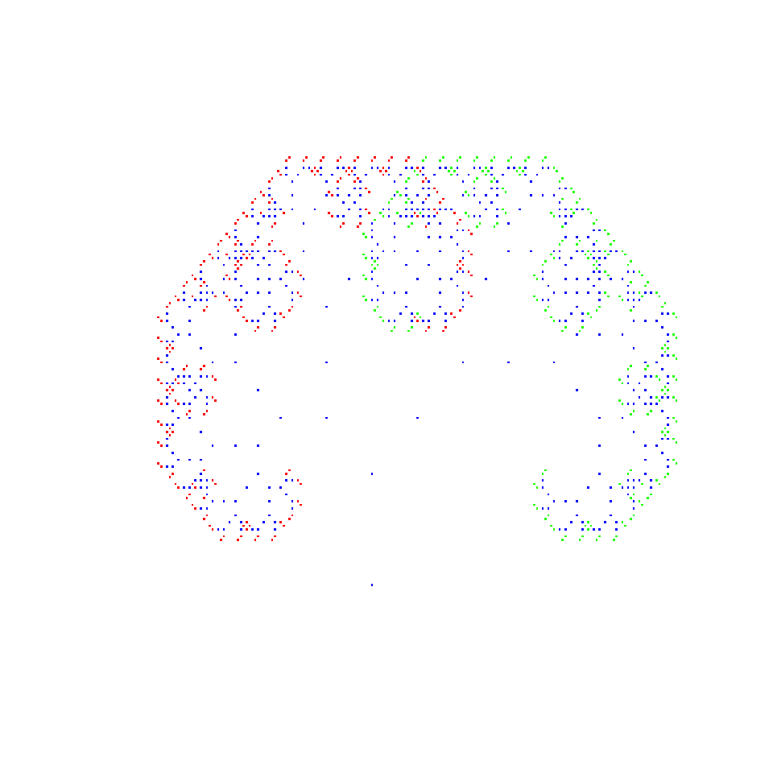
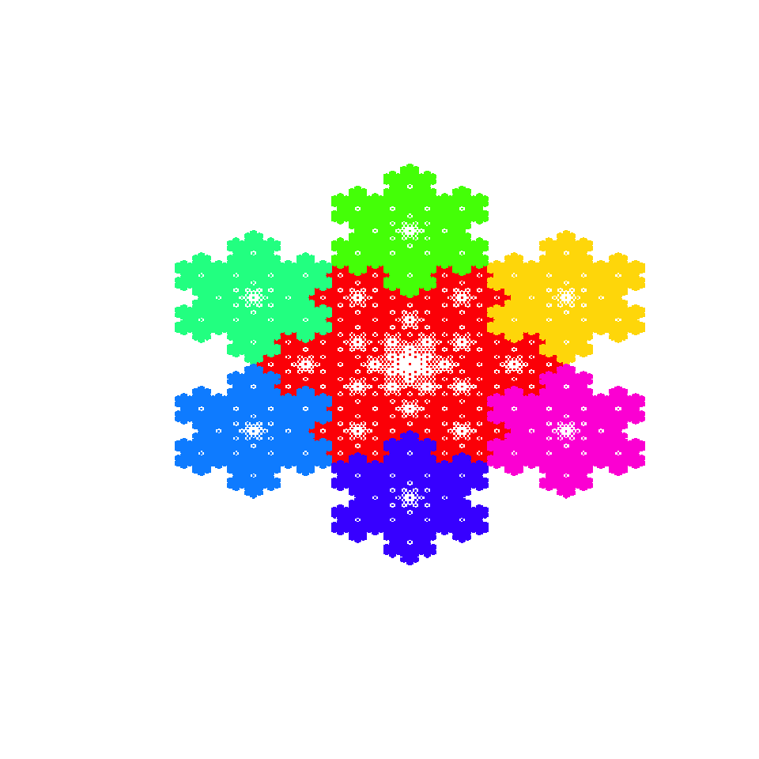

Fractals are amazing mathematical objects. You can think of them as figures that have a special property called “self - similarity”. No matter how close you look at them - they look exactly the same. Fractals do not only look mind-blowing to a layman, but they also possess properties that are of mathematicians’ interests.
A wide class of fractals (called IFS fractals) can be described in terms of contractions. These are functions that, intuitively, cause the function’s image to become smaller and smaller. All you need to create such a fractal is a list of functions that generate the fractal.
myContractions <- list(
function(x) {
c((-3*x[1]+3*sqrt(3)+3)/((1+sqrt(3)-x[1])^2 + (x[2])^2) - (1+sqrt(3))/(2+sqrt(3)),
3*x[2]/((1+sqrt(3)-x[1])^2 + (x[2])^2))
},
function(x) {
c(1/2*((3*x[1]-3*sqrt(3)-3-3*sqrt(3)*x[2])/((1+sqrt(3)-x[1])^2 + (x[2])^2) + (1+sqrt(3))/(2+sqrt(3))),
1/2*((-3*sqrt(3)*x[1]-3*x[2]+3*sqrt(3)+9)/((1+sqrt(3)-x[1])^2 + (x[2])^2) - (3+sqrt(3))/(2+sqrt(3))))
},
function(x) {
c(1/2*((3*x[1]+3*sqrt(3)*x[2]-3*sqrt(3)-3)/((1+sqrt(3)-x[1])^2 + (x[2])^2) + (1+sqrt(3))/(2+sqrt(3))),
1/2*((3*sqrt(3)*x[1]-3*x[2]-3*sqrt(3)-9)/((1+sqrt(3)-x[1])^2 + (x[2])^2) + (3+sqrt(3))/(2+sqrt(3))))
}
)myFractal <- createIFS(myContractions)You can also look up the IFS contractions included in the package (full list included below). The one above could be simply called by:
myFractal <- createIFS(ApollonianGasket)And now we are ready to use the plot.IFS() function.
plot(myFractal, 4) The fractal looks a bit pale, let us see how the resolution of the plot changes with respect to the depth of plotting.
plot(myFractal, 7) It should be noticed that in the plot there are always as many colors as there are contractions in the contraction list of a fractal. One color represents one contraction so that we can see what points are generated via which function.
In this package you will find lists of contractions for most popular fractals, e.g.:
It is interesting to note that all aforementioned fractals except for Apollonian Gasket are simply affine maps. Whereas Apollonian Gasket is the limit point of iterated circle inversions.
To plot a nice Pythagorean Tree it is best to use a square as a set of starting points. Remember that the set of starting points should be passed as a list of two-element lists (the first is the x coordinate, the second - the y coordinate).
points <- seq(0, 1, 1/10)
square <- list()
for (i in 1:11)
for (j in 1:11)
square <- append(square, list(c(points[i], points[j])))myFractal <- createIFS(PythagoreanTree)
plot(myFractal, 6, startPts = square) How would it look with one default point?
myFractal <- createIFS(PythagoreanTree)
plot(myFractal, 9) Well, not good (and we had to increase the number of iterations so that it looks any good!)
Last but not least: Koch’s Snowflake.
myFractal <- createIFS(KochSnowflake)
plot(myFractal, 6)
Two basic functions in the package are createIFS() and plot.IFS(). We created also some helping functions colorPoints() and createPoints(). If you are interested in the details of how the functions work have a look at the function’s documentation. Here only an outline of the method will be discussed.
The createIFS() function creates an object of IFS class so that the generic plot() function can be called to draw the fractal. The aim of the colorPoints() points function is to ensure that the image of each contraction is painted in different color. The most tricky function is createPoints(), the one that returns a list of points of which the fractal consists. The list is created via two “for” loops, the outer one dedicated to iterating over the number of iterations, the inner iterates over possible contractions.